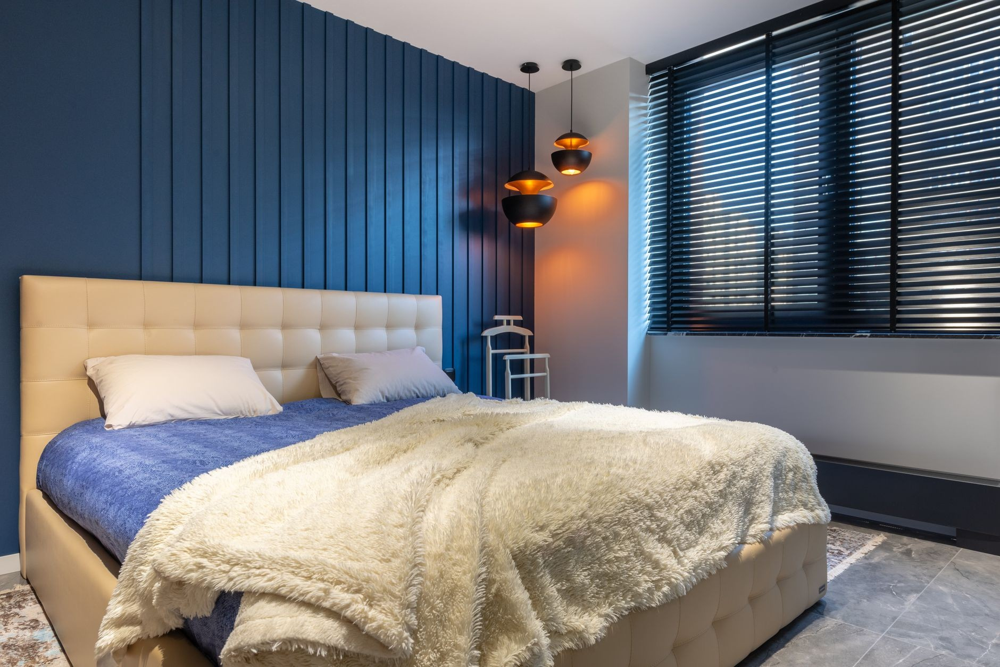
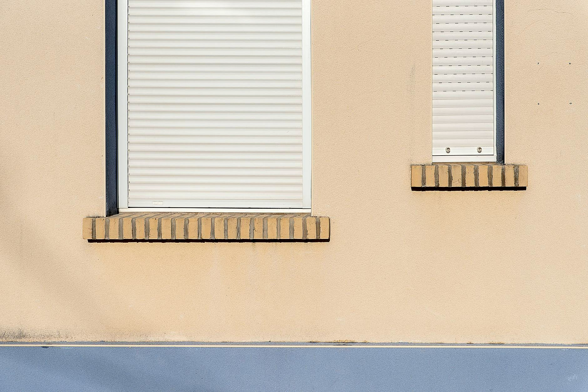
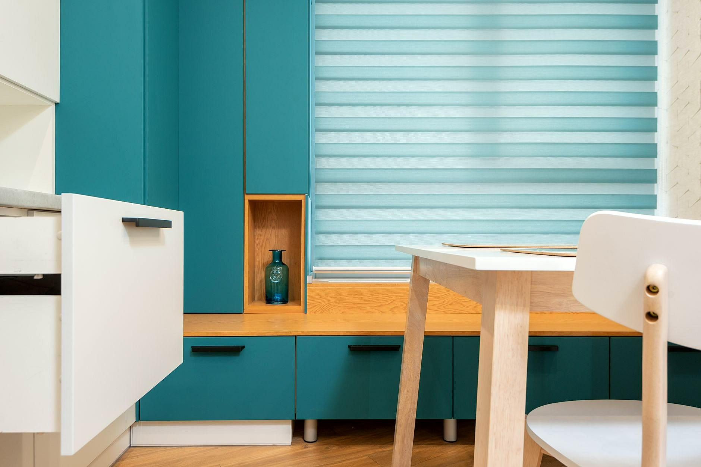
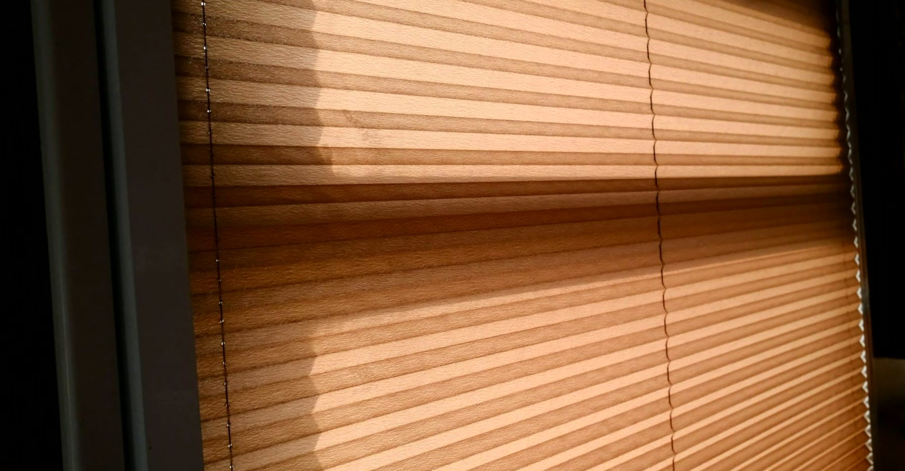
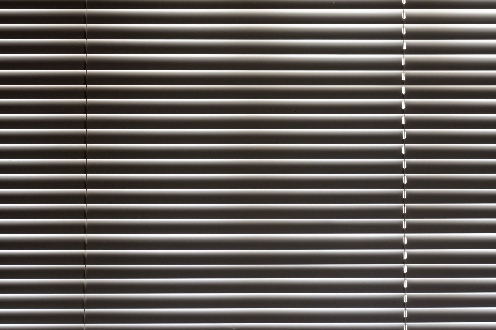
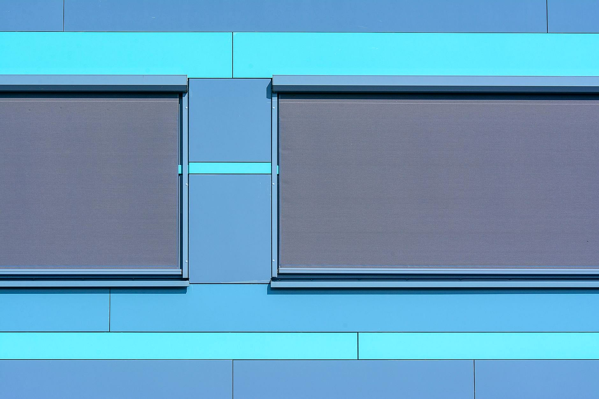

Strona głównaOferta
Osłony okieni tarasów.
Rolety, żaluzje, plisy, markizy i pergole na wymiar. Salon w Sieradzu, pomiar i montaż w całym województwie łódzkim.

Roletyzewnętrzne.
Roleta zewnętrzna pracuje cały rok. Latem zatrzymuje upał, zanim nagrzeje szybę, zimą dokłada warstwę izolacji, a w nocy daje pełne zaciemnienie. W wersji antywłamaniowej utrudnia wejście przez okno, gdy nikogo nie ma w domu.
- Rolety zewnętrzne do domu
- Rolety antywłamaniowe
- Naprawa i serwis rolet

Roletydzień i noc.
Dwie warstwy tkaniny w pasy, przezroczyste i pełne. Przesuwasz je względem siebie i ustawiasz, ile światła wpada do pokoju, bez podnoszenia całej rolety. Sprawdzają się w kuchni, salonie i pokoju dziecka.
- Regulacja światła jednym ruchem
- Tkaniny w wielu kolorach
- Montaż na skrzydle albo nad oknem

Rolety rzymskiei plisy.
Rzymska podnosi się w miękkie fałdy i wygląda jak zasłona, więc ociepla wnętrze. Plisę zsuwasz z góry albo podnosisz z dołu, dlatego dobrze sprawdza się tam, gdzie chcesz zasłonić tylko część okna.
- Rolety rzymskie
- Plisy z regulacją góra i dół
- Zasłony i firany szyte na wymiar

Żaluzjedo każdego wnętrza.
Lamelami ustawiasz kierunek i ilość światła. Aluminium łatwo przetrzeć, więc pasuje do kuchni i łazienki. Drewno ociepla salon i gabinet, a żaluzje pionowe zasłaniają duże przeszklenia.
- Żaluzje aluminiowe
- Żaluzje drewniane
- Żaluzje pionowe

Żaluzje fasadowei markizy.
Osłona montowana na zewnątrz zatrzymuje słońce, zanim nagrzeje szyby, więc w domu jest chłodniej. Nad tarasem markiza daje cień dokładnie tam, gdzie siedzisz.
- Żaluzje fasadowe
- Markizy tarasowe
- Osłony na elewacji

Pergolei zabudowy tarasów.
Pergola zamienia taras w miejsce, z którego korzysta się od wiosny do jesieni. Robimy pergole metalowe i drewniane, zadaszenia oraz zabudowy balkonów, loggii i tarasów, także z podłogą z drewna albo kompozytu.
- Pergole metalowe i drewniane
- Zadaszenia i wiaty
- Zabudowy balkonów i tarasów
Dodatkowo
Moskitiery, zasłonyi prace z drewna.
Oprócz osłon robimy też rzeczy, które dopełniają okno i ogród. Zakres ustalamy przy pomiarze.
Moskitiery
Na okna i drzwi balkonowe.
Naprawa rolet
Serwis i naprawa rolet zewnętrznych.
Zasłony i firany
Szyte pod wymiar okna.
Altany i drzwi z drewna
Altany ogrodowe i drzwi drewniane na wymiar.
Kontakt
Która osłonaCię interesuje?
Powiedz, co chcesz osłonić, a doradzimy i podamy cenę. Bez zobowiązań.